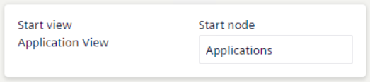

Set Your Favorite Flex Client Homepage
You can set the Flex Client homepage that displays when you log on or to which you want to go back.
Furthermore, whenever you select the company logo in the horizontal navigation bar of the web/desktop app, the screen will refresh and your favorite Flex Client homepage is reloaded.
- In the horizontal navigation bar, select your initials, and then select Account.
- The account page displays.
- Select Edit.
- The settings are available for editing.

- Select the Start node field.
- The Browse dialog box displays.
- From the views drop-down list, select the appropriate view.
- Select the node that will correspond to your favorite homepage.
NOTE: Alternatively, you can select and search for objects in the System tree. - Confirm your choice with Select.
- The Browse dialog box closes.
- Confirm changes with Save.
- In the account page, Start view and Startup node information updates accordingly. These settings will persist across user sessions.